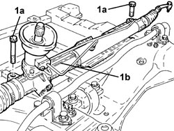

4130A15 POWER STEERING BOX R R WITH FRONT SUSPENSION FRAME REMOVED
- Path
- Procedures > 41 STEERING UNIT > 4130 POWER STEERING > 4130A POWER STEERING BOX > 4130A15 POWER STEERING BOX R R WITH FRONT SUSPENSION FRAME REMOVED
- Kind
- repair procedure (removal / refitting; the operation number is the code)
- Applies to
- all engines; all production periods
- Interactive page
- https://sloeber94.github.io/elrnDB-aBrrSpdr/en/#/946002178
Applies to: all engines; all production periods
 Removing
Removing
 Refitting
Refitting1. Undo the bolts (1a) and remove the power assisted steering box (1b) from the front suspension frame.

Applies to: all engines; all production periods
Refitting
Removing- Place the power assisted steering box in its housing on the front suspension frame and secure it by tightening the new bolts to the recommended torque.
Component | Fastening | dia | Value (daNm) | Validity |
|---|---|---|---|---|
Power assisted steering box | Bolt (to be replaced) | M12 | (chassis side) 11.3 - 13.8 + 180° |